Tutte le iniziative dell'anno
Mercoledì 23 Luglio 2025
Anche quest'anno la comunità di Rimini, Associazione "Gente del Titano" ha avuto il piacere di offrire una giornata al mare ai ragazzi dei Soggiorni Culturali e ai loro accompagnatori presso il Bagno 105.
Dopo il pranzo al ristorantino, sono proseguite le attività in spiaggia e i momenti di relax iniziati al mattino. I partecipanti sono poi ripartiti per San Marino nel tardo pomeriggio.
L'iniziativa ha riscosso un successo straordinario, coronato da un prestigioso e profondamente gratificante riconoscimento da parte del Signor Segretario agli Affari Esteri, Dott. Luca Beccari, e dell'intera Segreteria.
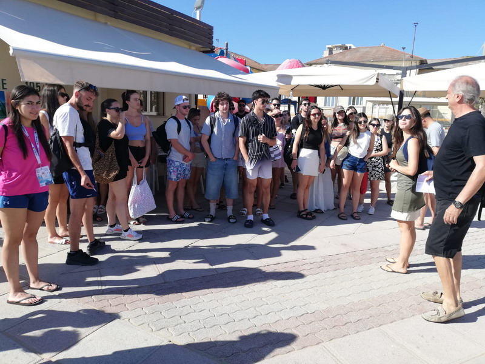
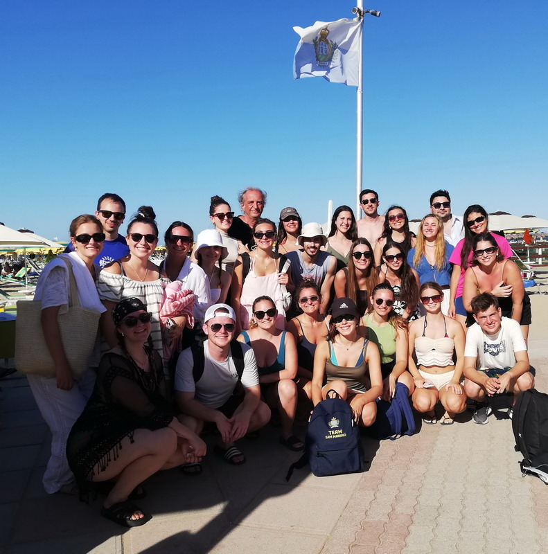
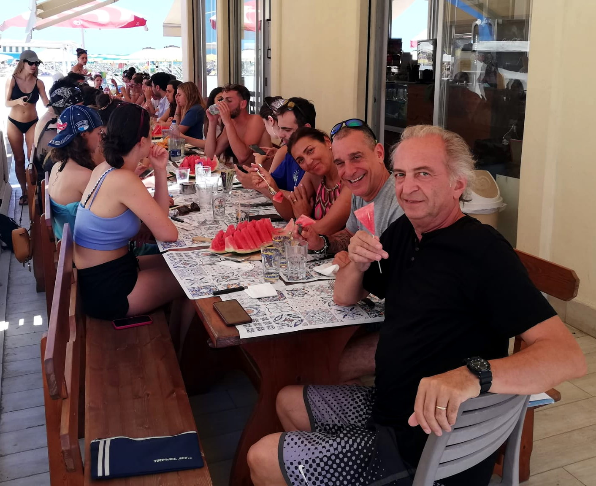
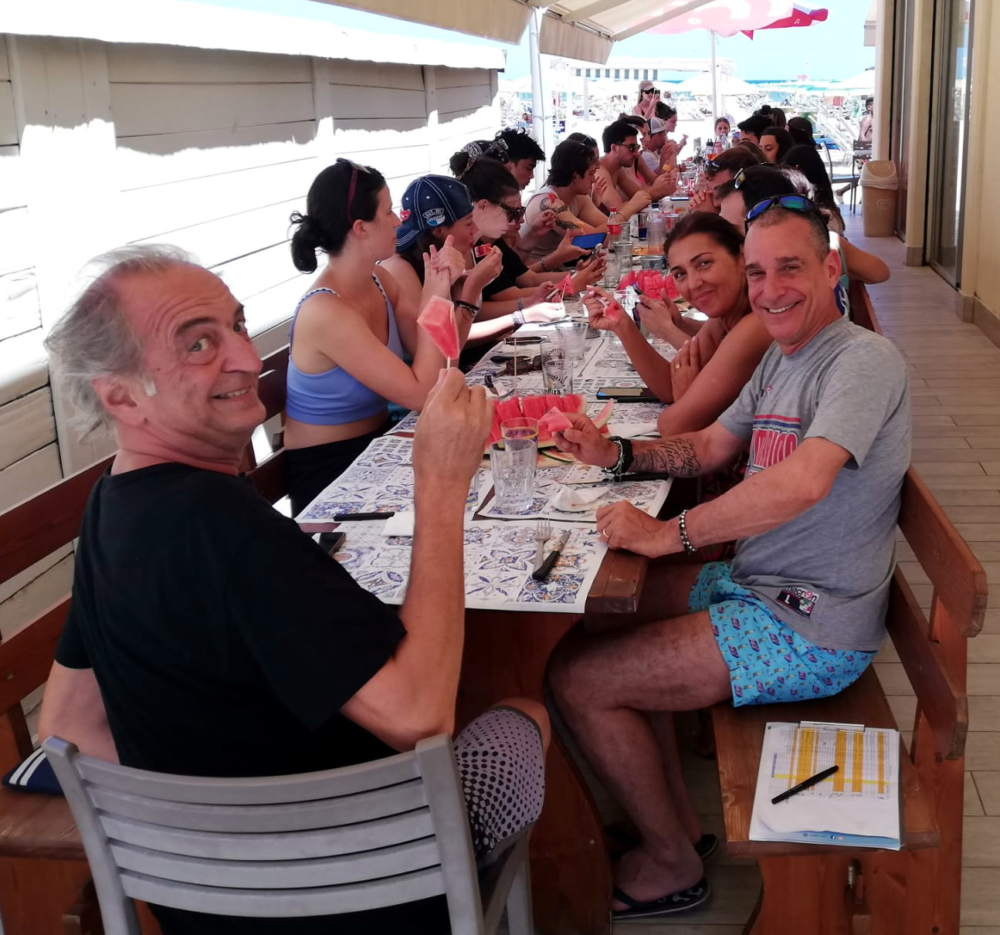
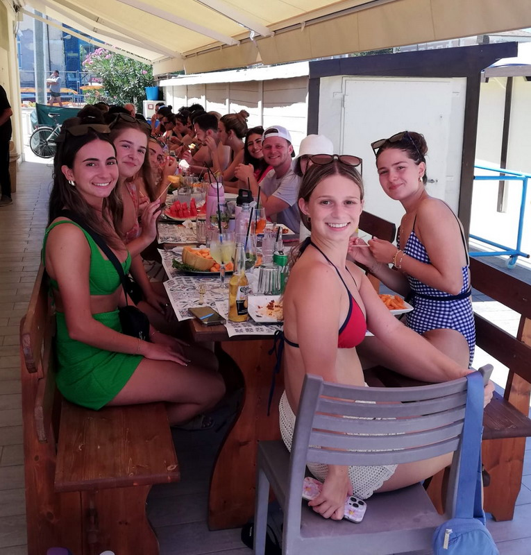
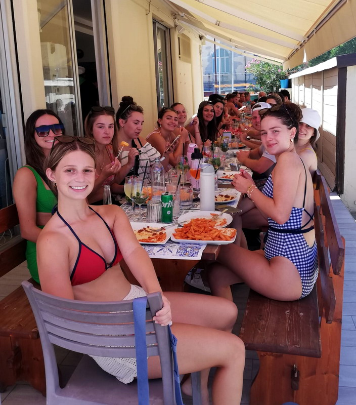
Domenica 27 Aprile 2025, presso Casa Zanni, si è svolta la consueta Assemblea Generale dell'Associazione, un appuntamento che anche quest'anno ha saputo richiamare una partecipazione straordinaria.
La presenza di 256 partecipanti ha reso l’evento straordinario: un numero che non rappresenta solo persone, ma storie, affetto e la forza della nostra comunità.
Abbiamo avuto l’onore di accogliere le più alte cariche dello Stato — Segretari e Sottosegretari di Stato, Capitani di Castello e Consoli — la cui partecipazione ha donato prestigio e un’emozione speciale alla giornata.
A tutti loro, e a ciascuno dei presenti, va la nostra gratitudine più sincera. Grazie per aver reso questo incontro un momento indimenticabile.
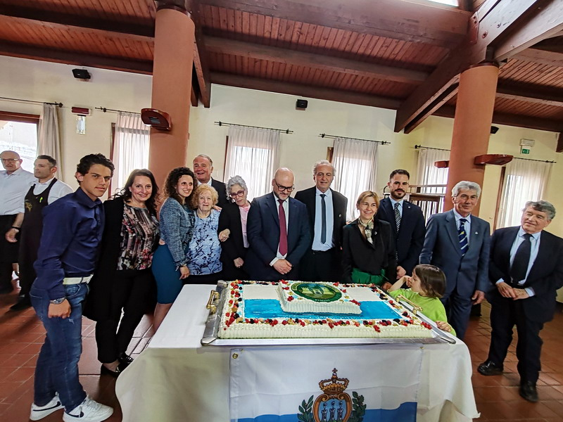
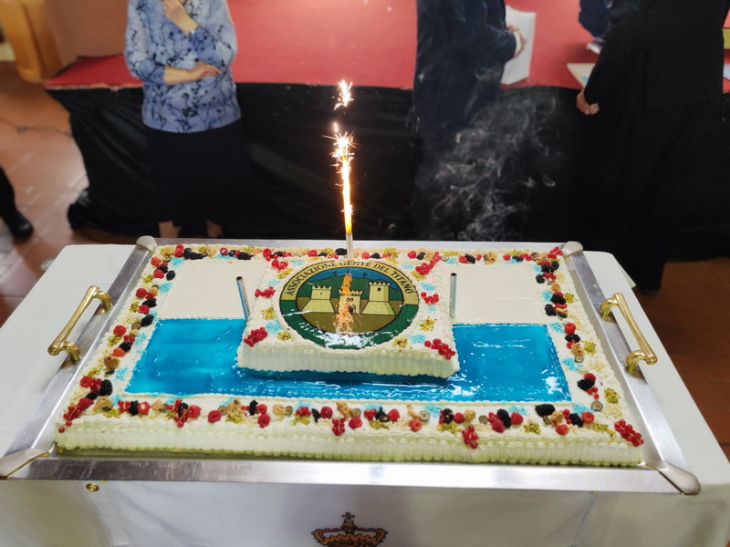
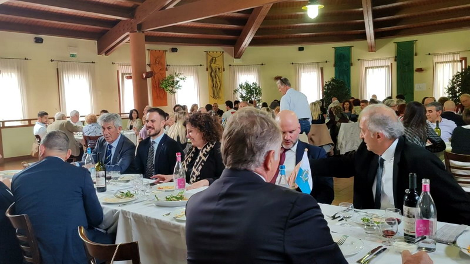
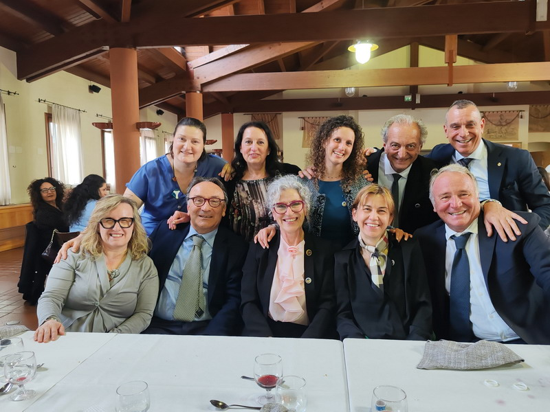
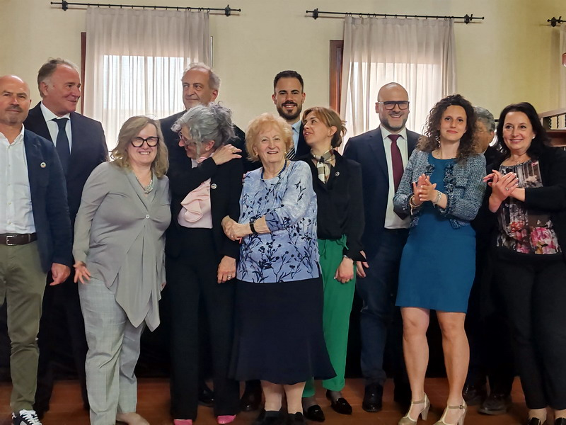
Durante l'evento abbiamo celebrato un momento di grande emozione: la consegna di 31 borse di studio agli studenti che hanno concluso con successo il loro percorso di laurea nel triennio 2022, 2023 e 2024.
Ogni borsa di studio rappresenta un traguardo, un sogno che si realizza, un futuro che si apre. La loro dedizione, il loro impegno e la loro determinazione sono motivo di orgoglio per tutta la nostra comunità.
A questi giovani talenti va il nostro più sincero incoraggiamento: che questo riconoscimento sia solo il primo passo verso nuove conquiste.
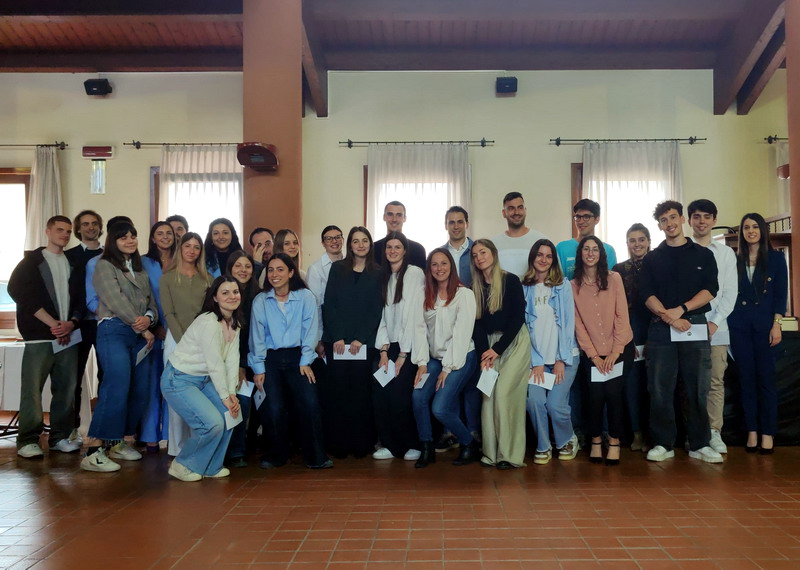